Sensing Impressionism
Museum Experience Design
Context
Museums serving impressionist collections face a persistent UX challenge of audience disengagement. Survey revealed that 70% of visitors were alienated by passive, text-heavy presentation formats that provided no entry point into appreciating artworks.
How might we design a proactive, interactive touring experience?
Literature Research
Impressionism is a way of seeing shaped by natural conditions - light, fog, time of day, atmospheric moisture, and Monet painted the same water lily pond across decades precisely to capture these perceptual variability: visible brushstrokes, natural light, everyday life, soft edges, and fleeting moment.
Rather than explaining impressionism, the experience needs to let visitors perceive it - adjusting conditions, moving through time, becoming part of the scene.
Design Response
A multi-modal system showcases continuous narrative from intellectual curiosity to full embodied participation
➊ Physical Product Prototype: Takeaway Impressionistic Self
An interactive smart mirror that transforms the visitor from passive observer to active participant of impressionistic art. The take-home artifact as a personalized souvenir functions as a memory anchor and potential social media trigger that extends the museum experience beyond its wall.
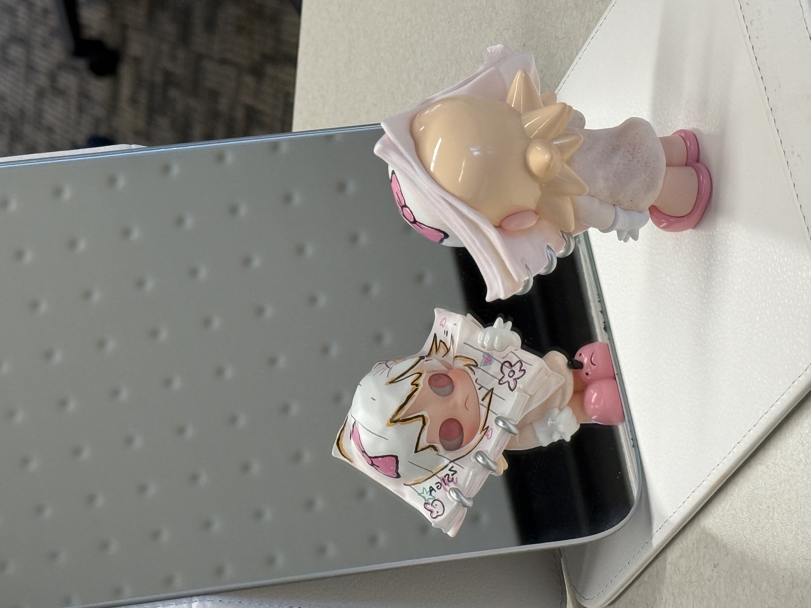
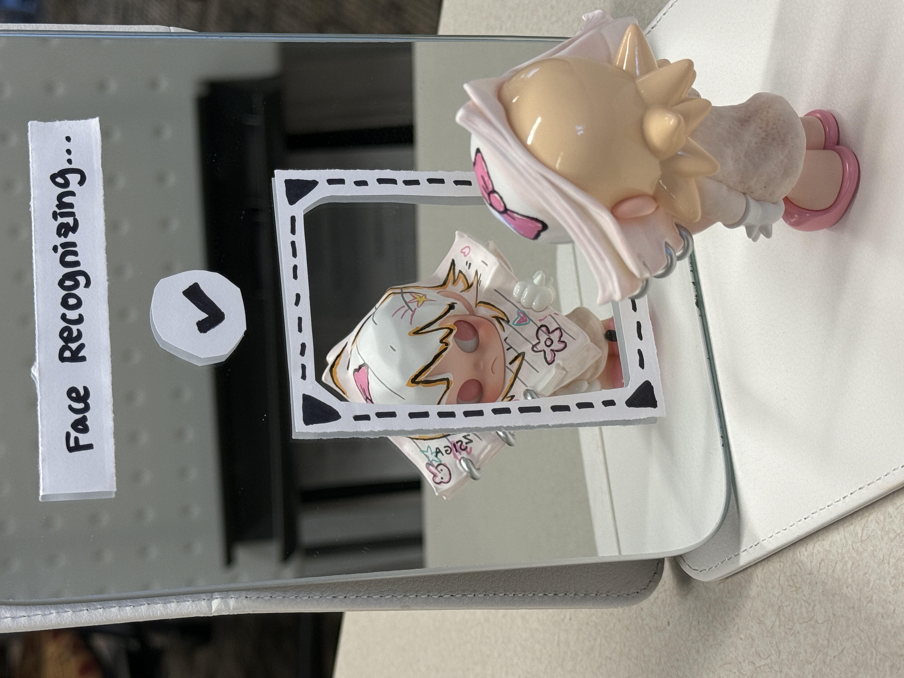
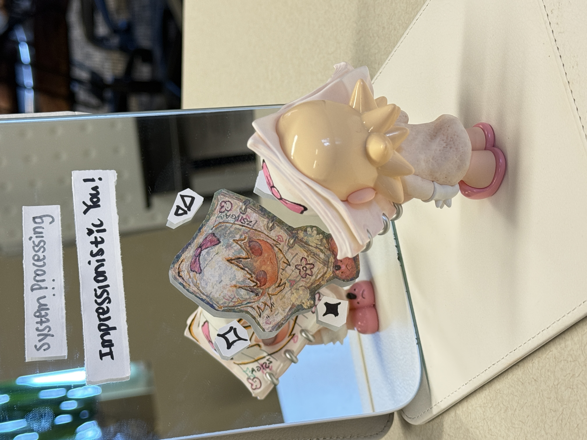
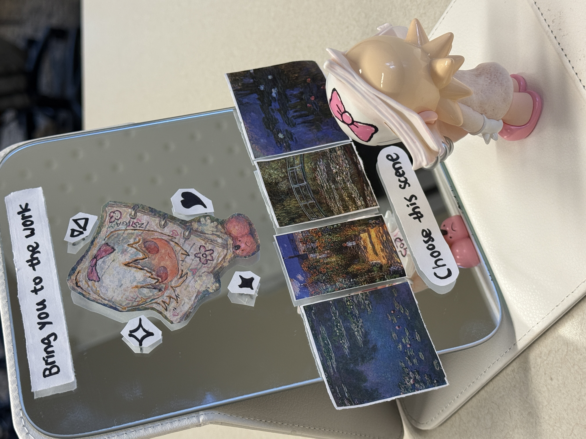
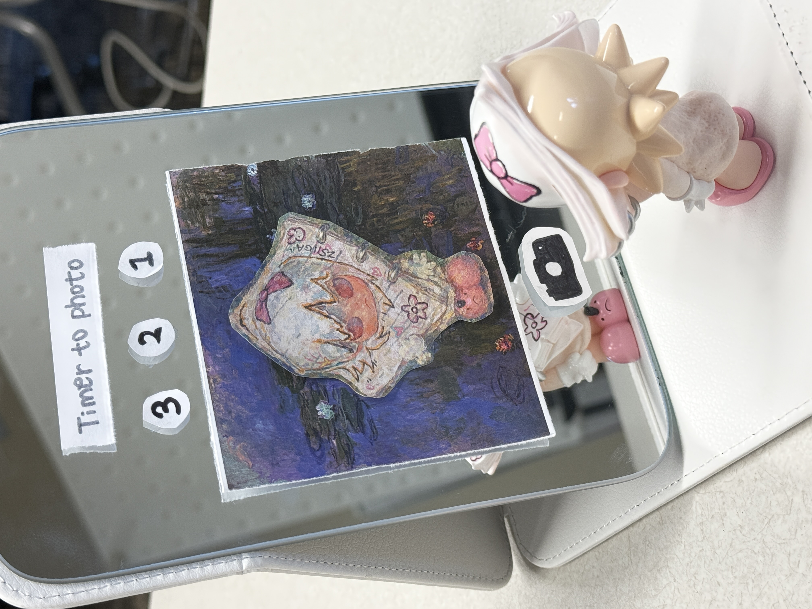

➋ Spatial Experience Prototype: Walk Through Time
A spatial exhibition layout with four zones mapped to morning, noon, sunset, and reflection for an embodied walk-through-time experience. In a linear-but-freeform path with space to stop at each zone, visitors are able to control their own pace while the spatial narrative guides perception shift.
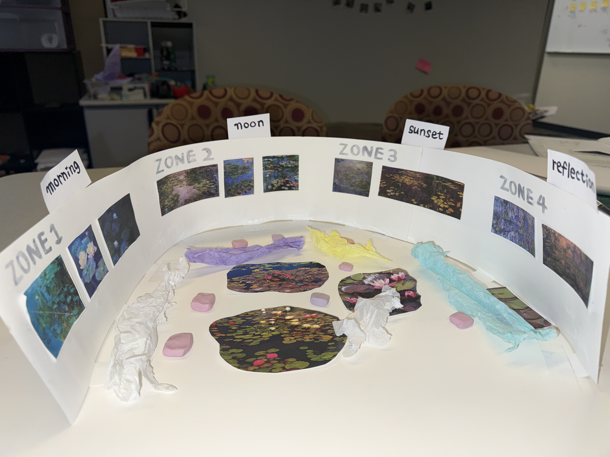

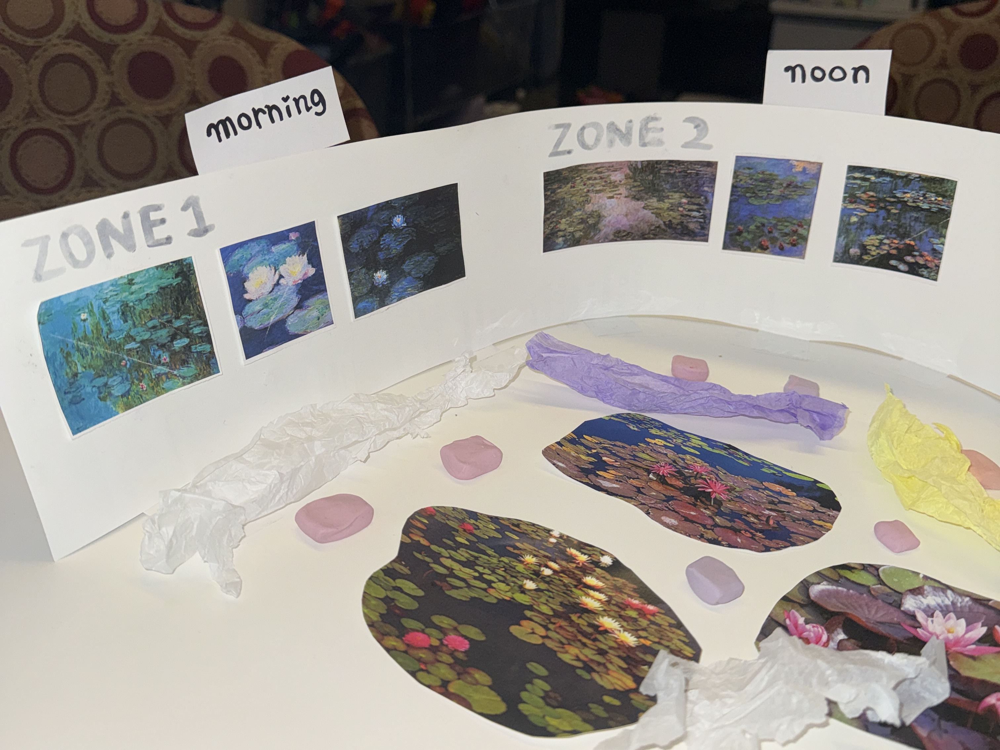
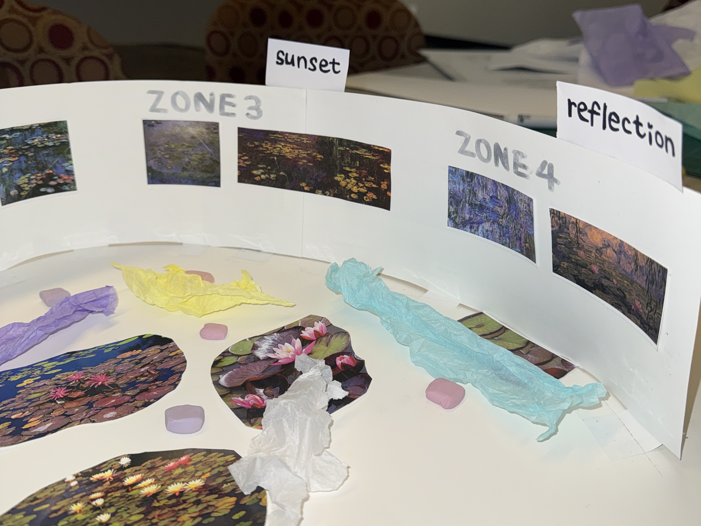
➌ Screen-based Prototype: Impressionistic Lab
Low-stakes cognitive entry point: visitors adjust filters on the original painting to see how environmental factors shape impressionism. By toggling these conditions, it’s approachable to see as Monet saw, gaining an embodied understanding that impressionism is a perceptual process shaped by nature.
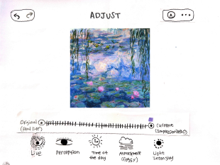

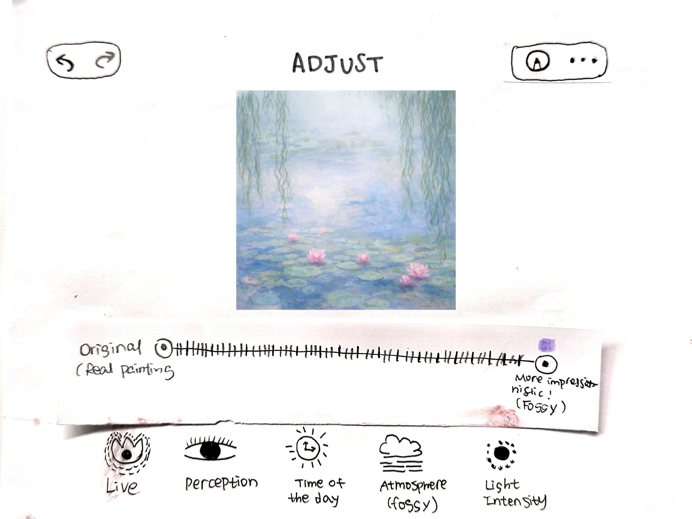
Outcomes
What this design achieves:
Multiple entry points for diverse audiences - from casual to enthusiasts
Take-home artifacts extend the museum experience beyond the walls
Cross-media touchpoints support marketing and souvenir revenue
Balancing tech interaction against the risk of overshadowing the artwork
Reflection
This project was completed independently within 10 hours of hyperfocused work from ideation to full prototype documentation. The spatial experience prototype layout potentially anchors a group design direction; the remaining touchpoints are modular and can be adopted based on team direction and exhibition scope. For future exploration, I would like to test:
- Does the space naturally acknowledge the patrons’ changing conditions in the paintings
- Whether transition points between zones need stronger environmental cues
- Where the mirror prototype lands best to reinforce the full experience arc
Personal notes: I’ve viewed 100+ Monet’s paintings - spanning his nature series, water lilies, and beyond - across institutions worldwide. This project was built through years of standing in front of the same series and watching how differently people respond. I simply love to observe matters and believe there’s someday I am able to problem-solve. That’s what made the research finding land: the problem was never the paintings. It was always the frame around them.
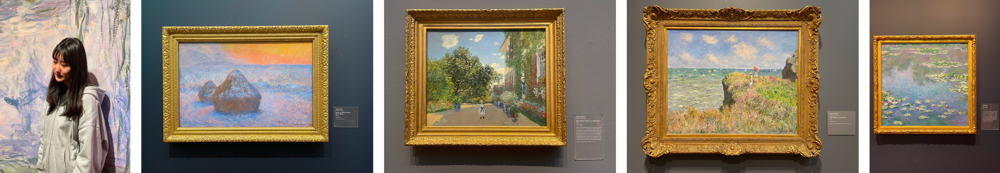